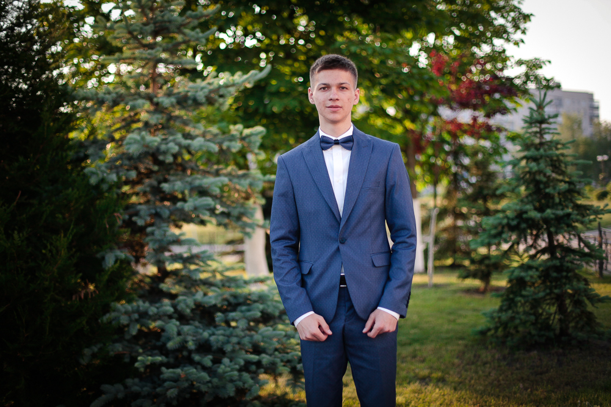

Хомич Ян Максимович
Контактная информация
| Телефон: | 0964507117 |
| Ел.почта: | yan1999@meta.ua |
| Соц.сети: | Instagram: khomich_yan |
| Почта: | yan1999@meta.ua |
Должность: Junior QA ingenier (Manual)
Интересы
web-приложения
использовать python в тестировании
Образование
КПИ
ФЕА, Возобновляемые источники энергии, Киев
Неоконченное высшее, с 09.2016 по 05.2020(3 года 8 месяцев)
Професиональные и другие навыки
Подготовка и выполнение тест-кейсов и чек листов
Написание баг-репортов
Уверенный пользователь ПК.
Опытный пользователь ОС Windows и MS Office, Word, PowerPoint, Excel, Access, sql server management studio express.
Умею работать в программах:
Mathcad, Mathlab, Charles, SoapUI, Postman, Notepad++
Языки программирования:
C++, Python.
Веб-программирование:
HTML, CSS.
Язык управления базами данных:
SQL.
Умение работать в баг трекинговой системе:.
JIRA
Личние качества:
высокий уровень ответственности и самоорганизации.
аналитический склад ума.
нацеленность на результат.
умение самостоятельно находить решение задач.
дружелюбие.
Знание языков
Украинский - свободно
Русский - свободно
Английский - средний